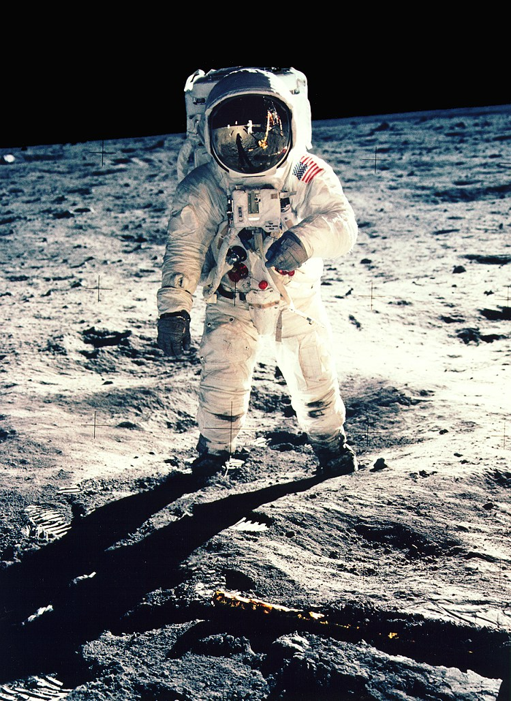

Apollo 11
Apollo 11 made the first crewed landing on the Moon in July 1969. Neil Armstrong and Buzz Aldrin travelled to the surface in the lunar module Eagle. Michael Collins remained in lunar orbit in the command module Columbia. The crew returned to Earth with lunar samples and a new view of what space exploration could achieve.

Key dates
- : Apollo 11 launched from Florida.
- : the spacecraft entered lunar orbit.
- : Eagle landed on the Moon.
- : Armstrong stepped onto the surface at 02:56 UTC.
- : the crew splashed down in the Pacific Ocean.
The first step occurred on 20 July in the United States, but on 21 July in UTC.
Four mission facts
- The crew consisted of three astronauts.
- The mission used a Saturn V launch vehicle.
- Eagle landed in the Sea of Tranquility.
- Only Armstrong and Aldrin walked on the Moon during this mission.
Houston, Tranquility Base here. The Eagle has landed.
Source: Neil Armstrong, Apollo 11 lunar landing communication, 20 July 1969; NASA Apollo Lunar Surface Journal.
Read NASA's Apollo 11 overview (opens in a new tab).
First-step audio: listen to Armstrong's words as he stepped onto the Moon.
Transcript: “That's one small step for man, one giant leap for mankind.” Recording: NASA Historical Sounds.
The road to Apollo 11
| Mission | Launch date | Crew size | Main achievement |
|---|---|---|---|
| Apollo 7 | 11 October 1968 | 3 | Tested the command and service modules in Earth orbit |
| Apollo 8 | 21 December 1968 | 3 | First crewed flight to orbit the Moon |
| Apollo 9 | 3 March 1969 | 3 | Tested the lunar module with a crew in Earth orbit |
| Apollo 10 | 18 May 1969 | 3 | Rehearsed a landing mission in lunar orbit |
| Apollo 11 | 16 July 1969 | 3 | First crewed Moon landing |
| Total crew places across five flights | 15 | Each flight carried three people | |
Dates and achievements: NASA Apollo mission history. Crew places count flights, not unique astronauts.